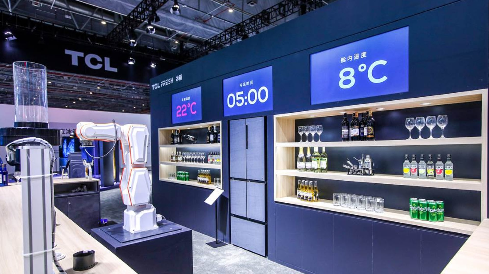
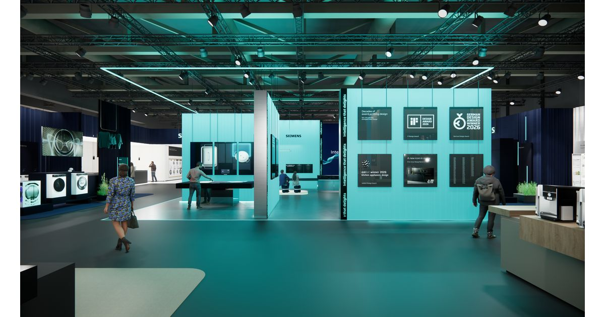
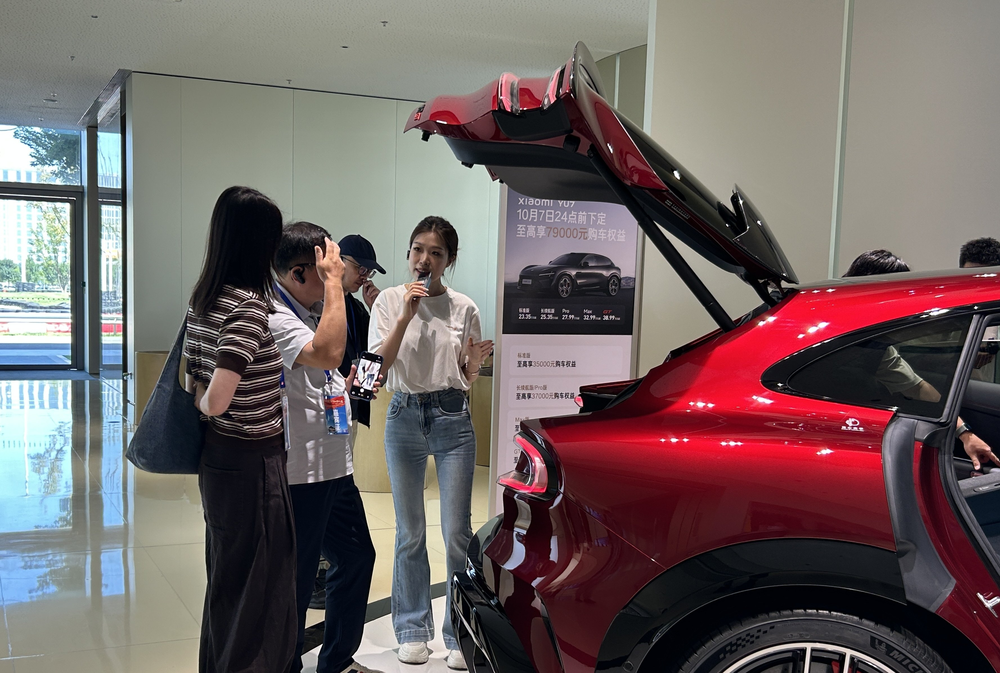

1
厨房智能硬件 / 厨房空间设计 / 竞品动态
TCL 在 IFA 2026 把冰箱、门锁和陪伴机器人放进一个 AI 家庭场景
TCL 以 “Inspired by Life, Powered by AI” 为主题展示 AI 生活方案，其中 Free Built-in Refrigerator 强调齐平嵌入、灵活储鲜与湿度控制，NXTHOME 则把家电、智能显示、门锁和家庭陪伴机器人整合成空间体验。

配图：TCL 智能冰箱与机器人演示资料图，能同时体现“厨房硬件 + 空间体验 + 家庭机器人”方向。图片评分：84/100。
这条新闻的价值不在于某一个家电新品，而在于 TCL 正在把厨房硬件放到完整家庭空间里表达：冰箱不只是储鲜单体，而是和家居风格、智能门锁、屏幕入口、陪伴机器人共同组成一个 AI 生活界面。
对厨电产品定义来说，齐平嵌入、储鲜控制和跨设备联动会继续变成高端厨房的基础能力。未来用户感知到的“智能”，可能不是一个 App 功能，而是空间里多个设备能否自然接力。
小编有话说TCL 这次给出的方向很明确：AI 家电不能只讲参数，要讲空间关系。厨房硬件如果不能进入家庭场景叙事，很容易被用户看成孤立单品。
2
AI 厨具新交互 / 厨房工业设计 / 大模型算法
Siemens iQ700 烤箱继续升级：识别百种菜肴，并记住用户自己的菜谱
Siemens 在 IFA 展前发布中展示 iQ700 烤箱的菜肴识别能力，可自动识别一百多种菜并推荐设置；今年新增保存用户常用菜谱的能力，让烤箱下次直接启动对应程序。

配图：Siemens Home Appliances IFA 2026 官方展区图，展示其智能家电与设计语言。图片评分：80/100。
烤箱从“预设菜单”进化到“识别食物 + 记忆个人菜谱”，是 AI 厨电比较务实的一步：它没有直接替用户烹饪全部流程，但可以减少判断火候、模式、时间的认知负担。
这类能力落地的关键在数据闭环：识别菜品只是第一步，更重要的是能否沉淀家庭口味、用户偏好和高频菜谱，并把它稳定映射到温控、湿度、蒸汽和烘烤曲线。
小编有话说厨房 AI 的有效切入点不是炫技，而是把“每次都要重新设置”变成“设备懂我的习惯”。这比单纯语音控制更接近真实价值。
3
具身智能 / 用户趋势 / AI技术趋势
36氪探访北京亦庄：机器人 4S 店把“家庭具身智能”搬到可体验现场
36氪 9 月 4 日报道，北京经开区集中展示自动驾驶、机器人商场、北京人形机器人创新中心等高端智能制造成果，其中机器人 4S 店把具身智能从实验室叙事带到消费级体验空间。

配图：36氪报道中的亦庄机器人体验场景，真实现场、信息量高，优于宣传海报与虚拟 Logo。图片评分：90/100。
机器人 4S 店的意义，是让用户第一次可以像看汽车、看家电一样理解机器人：能不能导览、陪伴、递送、协作，现场体验比参数表更容易建立信任。
对未来厨房和家庭场景来说，机器人不一定马上进入每个家庭，但“可展示、可试用、可维护”的零售形态会提前影响用户认知，也会倒逼硬件团队重视可靠性、售后和场景脚本。
小编有话说具身智能要真正进入家庭，光有发布会不够，必须有可试、可修、可复购的渠道模型。机器人 4S 店是一个值得跟踪的落地信号。